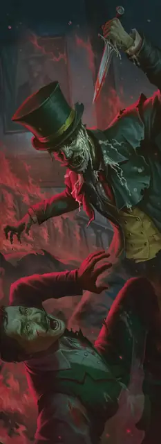

Восковик
Waxwork
Средний или Маленький Конструкт, Нейтральный Злой

Класс Защиты 14 Инициатива +1 (11)
Хиты 52 (7к8 + 21)
Скорость 30 футов
| мод | спас | ||
|---|---|---|---|
| СИЛ | 17 | +3 | +3 |
| ЛОВ | 13 | +1 | +1 |
| ТЕЛ | 16 | +3 | +3 |
| мод | спас | ||
|---|---|---|---|
| ИНТ | 1 | −5 | −5 |
| МДР | 10 | +0 | +0 |
| ХАР | 1 | −5 | −5 |
Уязвимость к урону Огонь
Сопротивление урону Дробящий, Колющий, Рубящий
Иммунитеты Психический, Яд; Бессознательный, Испуганный, Истощение, Оглохший, Окаменевший, Ослеплённый, Отравленный, Очарованный, Ошеломлённый, Парализованный
Чувства пассивное Восприятие 10, Слепое зрение 30 футов
Языки знает Общий, но не говорит
Опасность 3 (700 опыта; БВ +2)
Особенности
Лепкий. Если восковик получает урон Огнём, до конца своего следующего хода он совершает спасброски с Помехой, а его Скорость снижается на 20 футов.
Действия
Мультиатака. Восковик совершает две атаки Резцом скульптора.
Резец скульптора. Бросок рукопашной атаки: +5, досягаемость 5 фт. Попадание: 10 (2к6 + 3) Рубящего урона.
Ком воска. Бросок дальнобойной атаки: +5, дистанция 20/60 фт. Попадание: 8 (2к4 + 3) Дробящего урона, и Скорость цели снижается на 10 футов до конца её следующего хода.
Бонусные действия
Перевоплощение. Восковик либо перевоплощается в Гуманоида своего размера, либо возвращается в истинную форму. Его параметры не меняются в зависимости от формы. Любое снаряжение, которое он носит или несёт, не трансформируется.
Бонус мастерства +2
Среда обитания Город
Сокровища Инструментальные
Восковик
Кровожадный восковой двойник
Восковики — реалистичные гуманоидные изваяния, стремящиеся убить и заменить собою тех, по образу и подобию кого их изготовили. Обычно эти создания верят, что они и есть подлинные живые существа, а вовсе не копии. Любой восковик, которому предъявят доказательства его истинной природы, впадает в неистовство и не успокоится, пока либо сам, либо его двойник не будет уничтожен.
В редких случаях восковик может жить так, словно он и есть настоящий оригинал. Подобные личности, как правило, бездушны и тщеславны. Некоторые из них стремятся создавать новых восковиков, чтобы подменить своим видом ещё больше людей.